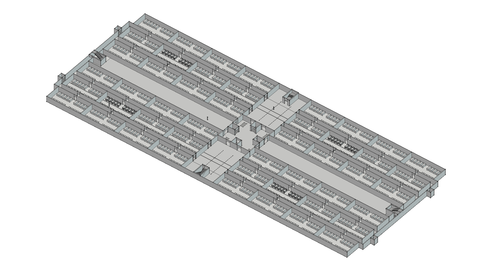
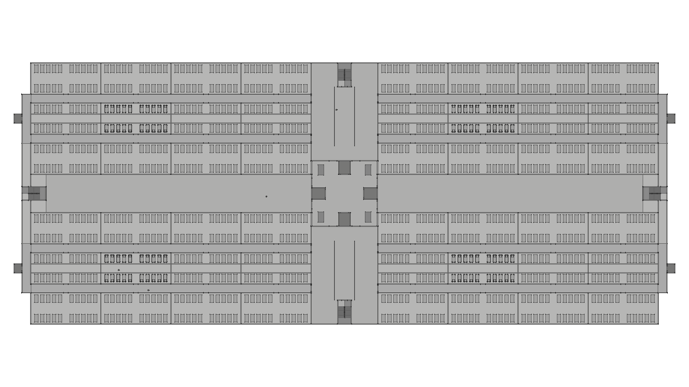
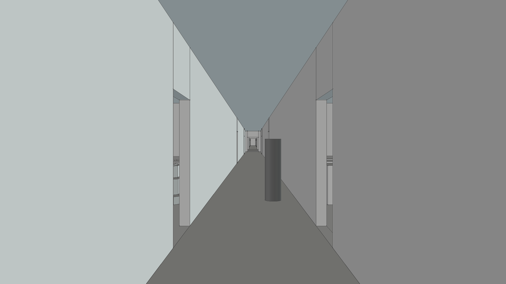
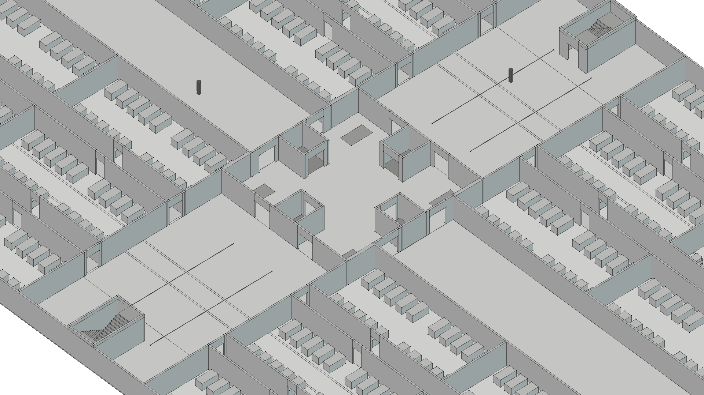
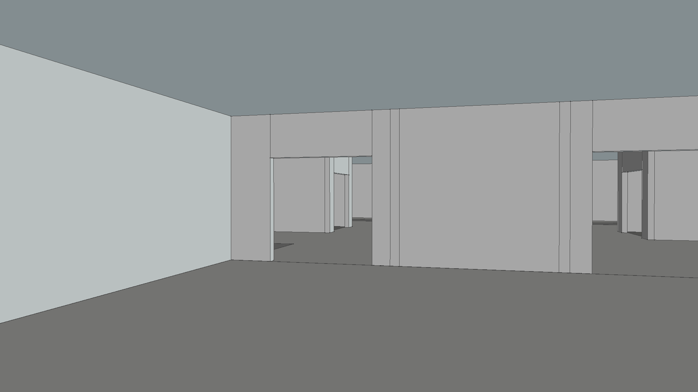
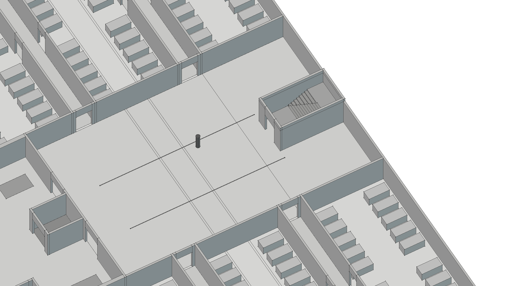
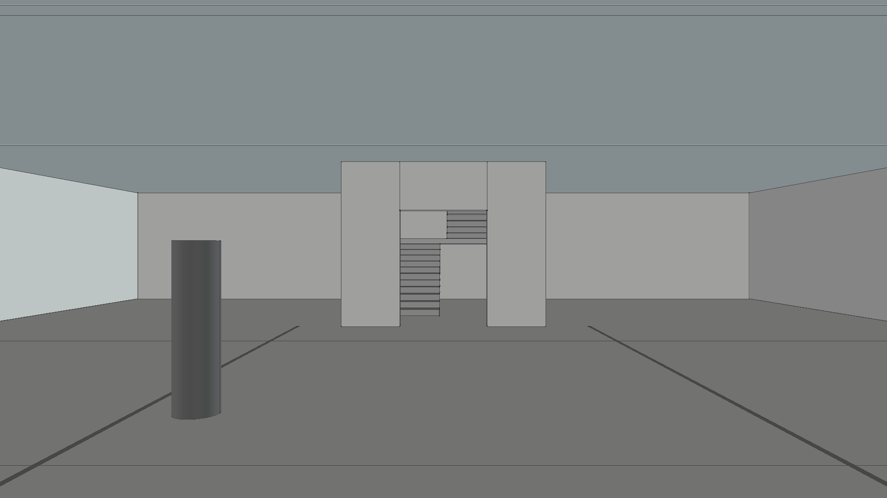
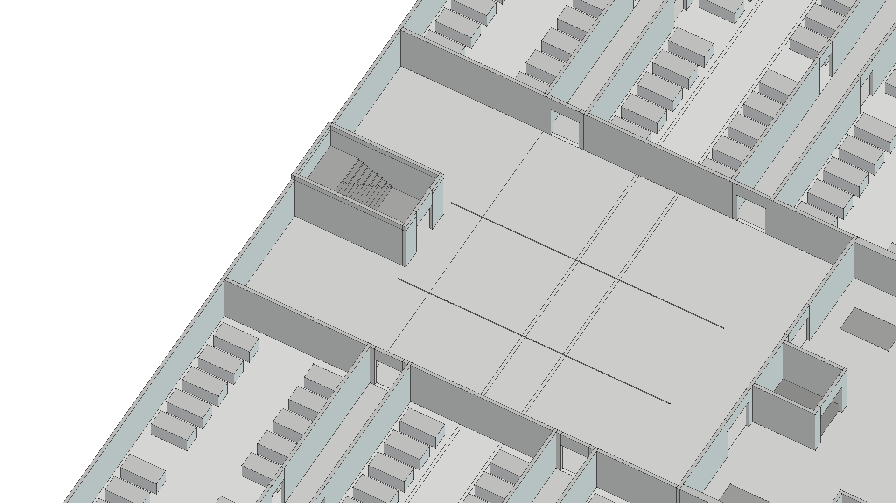
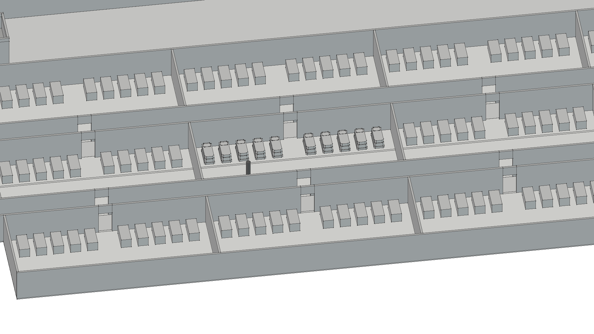
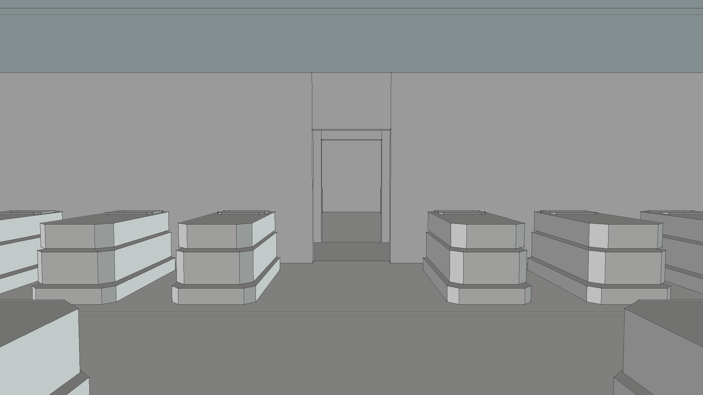
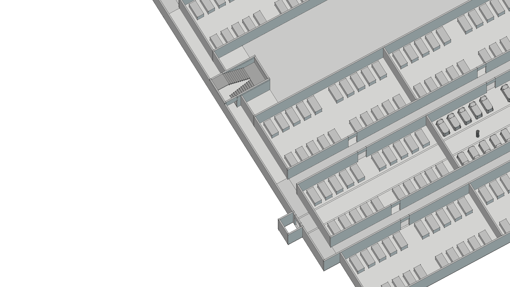
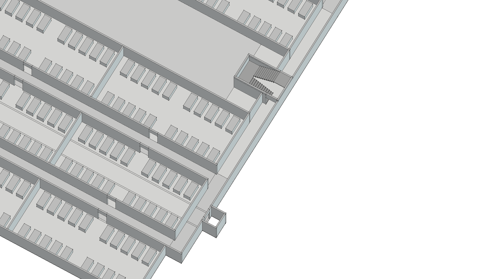
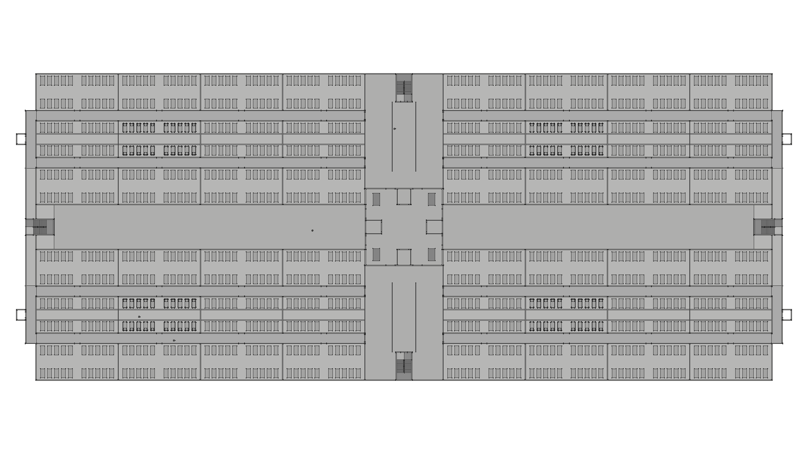
依据提交8dbcec55的0F：只裁除四个人员梯井上下八片无功能外伸楼板；逻辑节点保持，真实结构板只保留连接廊和井道支承。0E修复及其他平面全部保持。48室/960舱；四个代表室完整闭舱，其余简化真实外包。下列均为实际FreeCAD原生视图，1920×1080，点击打开原图。所有墙体保留；相机仅按标注显示/隐藏主区顶板。楼梯通向+3.80m下一层标高，楼梯井不封顶，上层结构未建。
墙高3.40m、门高2.40m、层高3.80m、楼板0.10m为暂定空间验证值；柱体仅为1.68m尺度参照。只做灰模空间验证，无材质贴图、场景灯光、最终美术或20层堆叠。












